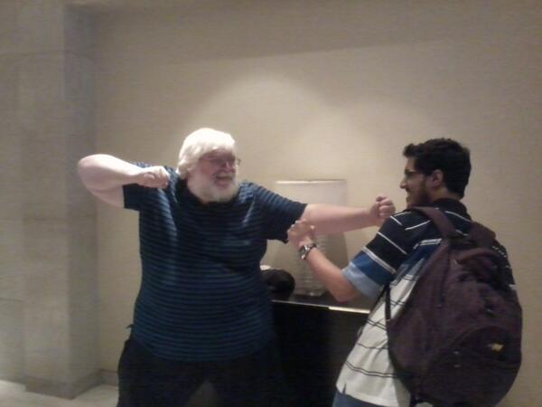
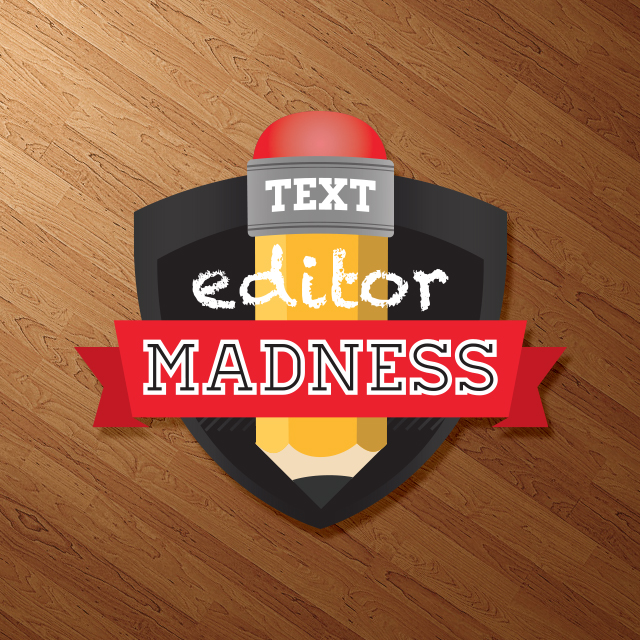

Работа с SublimeText like a Pro
Created by
Sloboda Studio
/ Github
SlobodaStudio
/ Twitter
@Slobodastudio
Работа с SublimeText like a Pro
SublimeText vs Vim


Файлы, каталоги, проекты
Боковая панель
Открытие/закрытие Сtrl+K+B
Открытые файлы и папки
Получение фокуса Сtrl+0
Перемещение по ним
Layouts
Создание ручное / с помощью горячих клавиш
Ctrl+Shift+{2-5, 8-9}
Перемещение фокуса Ctrl+{1-4}
Проект
Проект хранит соответствующий ему workspace
Меню проектов
Быстрый переход между проектами Сtrl+Alt+P
Конфигурирование SublimeText. Установка и настройка плагинов.
Установка PackageControl
Список всех доступных команд Sublime (command palette) Ctrl+Shift+P
Управление пакетами: install, remove, list, enable/disable
Глобальные и пользовательские настройки: редактор, горячие клавиши, плагины
Ручная установка и настройка пакетов
Список плагинов, которые установлены/используются для этого туториала
https://github.com/SlobodaStudio/sloboda-edu-sublimetext/blob/master/plugin_list.md
Перемещение по коду и работа с ним
Goto anything Ctrl+P
Goto line Ctrl+G
Goto declaration Alt+P (custom setting)
Go back Alt+-
Поиск/замена в файле (обычный, инкрементный etc.)
Поиск/замена в открытых файлах / проекте
Поиск/замена по отдельной папке
Перемещение/переименование файлов
Смена регистра
Фолдинг
Дублирование строки
Редактирование всех упоминаний символа в файле
CTags и переход по методам, классам и пр.
Подсветка синтаксиса и lint
Подсветка синтаксиса
SublimeLinter
Плагины к SublimeLinter (linters)
Конфигурация linters
Включение/отключение linters
Git
Checkout
Add, commit, amend commit
Branches
Merge / pull / push
Status & diff
Blame
О чем я не рассказал
Написание плагинов
Сниппеты
Более тесная интеграция со сторонними инструментами (отладчик, Zeus etc.)
Thank you!
Dare you to ask...